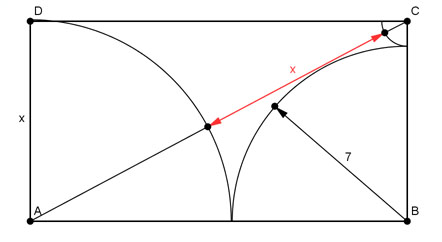

Pythagoras Aufgabe 9 Berechnen Sie die Länge der Strecke x in mm.  AC = x + x + (x - 7) AB = x + 7 Satz von Pythagoras im Dreieck ABC: AC² = AB² + BC² ((x + x + (x - 7))² = (x + 7)² + x² (3x - 7)² = (x + 7)² + x² 9x² - 42x + 49 = x² + 14x + 49 + x² | -49 9x² - 42x = 2x² + 14x | -2x² 7x² - 42x = 14x | :x 7x - 42 = 14 | +42 7x = 56 | :7 x = 8 mm